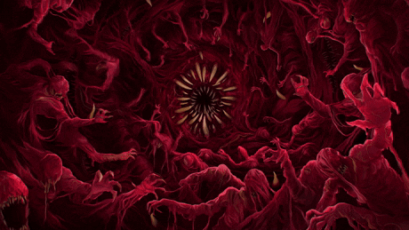
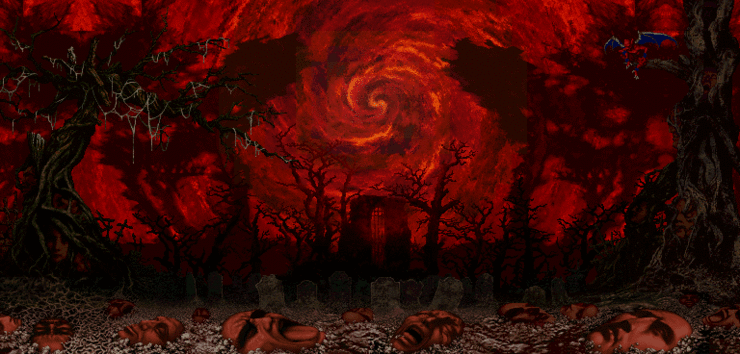
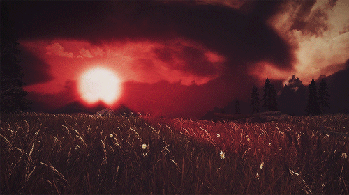
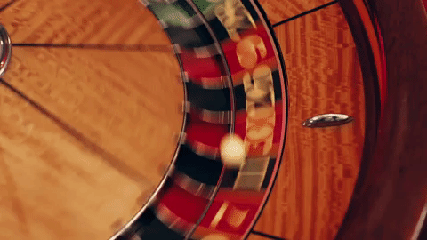

Gerald likes himself. A lot. He's cocky, stubborn, loud when he wants to be, and very pleased with himself whenever he's good at something. He likes attention, expensive things, good food, drinking, women, and being told he's impressive. He'll happily tell you he's the best in the room if nobody else gets there first.
He's also very good at pretending to be less than he is. Gerald can act careless, oblivious, stupid, or simply too busy joking around to notice what's happening. Most of the time it's deliberate. He'd rather have someone underestimate him than figure out what he's actually thinking. He can keep a straight face through almost anything if it means keeping control of the situation.
With people he likes, he's much easier to deal with. He jokes, teases, gets overly comfortable, and enjoys getting a reaction out of people. He can be genuinely pleasant when he isn't trying to prove something. He also gets bored quickly. Sitting around with nothing to do is one of the few things that reliably gets under his skin.
He's still got a temper. Push him hard enough and the joking disappears pretty quickly. Gerald hates being treated like he's stupid, hates losing control, and hates looking weak even more. If something is actually bothering him, he'll usually turn it into irritation before he'll admit that it hurt him.
That doesn't mean he never cares. He can be protective and surprisingly thoughtful with people he's attached to. He just has a terrible habit of hiding it behind teasing, arrogance, or pretending he doesn't care in the first place.

Gerald doesn't think life is particularly fair, and he doesn't see much reason to wait around for it to become fair. If there's something he wants, he'd rather take the chance and get it himself. Money gives him freedom. Being good at what he does gives him more of it. He respects people who can actually do something, and has very little patience for people who can't.
He likes pleasure because it's simple. Drink something good. Eat something good. Go somewhere interesting. Find a woman. Do the job. Find another job. Find something else when that gets boring. There's always something to do.
Most importantly, Gerald doesn't like being seen as anything other than confident. He can be frightened, angry, ashamed, uncertain, even genuinely upset, but he'd rather make a joke than let someone see it. If he has to act like everything is fine until he believes it himself, he'll do that too.

Gerald is hard to ignore. He's tall, talks like he already knows what he's doing, and carries himself with the confidence of someone who expects people to move out of his way. When he's in a good mood, he's loud, playful, and annoyingly charming. When he's not, the change is obvious. He doesn't always need to raise his voice to make a room uncomfortable.
People who know him well get a different version. He talks more freely, jokes more, and lets himself act stupid without needing anyone to believe that he actually is. It's still a performance sometimes. He's just more comfortable around the people who already know him.

Gerald grew up in the Millard family with his mother Aurore, his father Sylvester, and his younger brother Alan. They were a wealthy family and cared very much about how they looked to other people. Gerald was punished more often than Alan and was usually the one making things difficult, especially when he refused to listen. He was angry about a lot of it, but learned fairly early that showing it only made things worse. So he stopped showing it. He'd laugh, make some stupid comment, act like he didn't care, and let everyone think that was all there was to him.
He kept doing that when he got older. Gerald became an assassin, started drinking and smoking, chased women whenever he felt like it, and built himself into someone who was very easy to mistake for an arrogant idiot. He liked that. It meant people underestimated him. He could act careless, act oblivious, act like everything was a joke while keeping the things he actually thought to himself. Even his ego was useful to him. If he was always talking about how great he was, nobody had much reason to wonder what he was trying so hard not to show.
He still loved the attention. Gerald liked women, liked being wanted, liked being praised, and liked having people around him who thought he was impressive. He could be a complete narcissist about it. Michelle and Melonie became part of his life somewhere along the way, and somehow they stayed around despite everything else that came with him. He could be affectionate with them, disappear into his work, come back acting like nothing had happened, and carry on as usual. Gerald was very good at making things look normal.
Until he killed them.
He didn't stop pretending after that, either.
Gerald died at fifty-one.
I suppose I could explain why.
Hm…
Hhehe… yeah. It's fine. It's all fine.
Nothing to worry about anymore. No reason to keep thinking about it. It's over, isn't it?
...yes.
Heh. Hm… that's better. I can leave it there.
Gerald is fifty-one, although he doesn't always look it. His greyish hair is slicked back and kept neat, and he usually wears a black suit, white shirt, and matching tie. He also has a large grey feather boa that he refuses to get rid of, because apparently a normal suit isn't enough.
His black fedora is decorated with two playing cards and a reddish-black rose. He also wears dark sunglasses, usually low enough that he can actually see. Most of his clothes are kept neat even when the rest of his life isn't.
